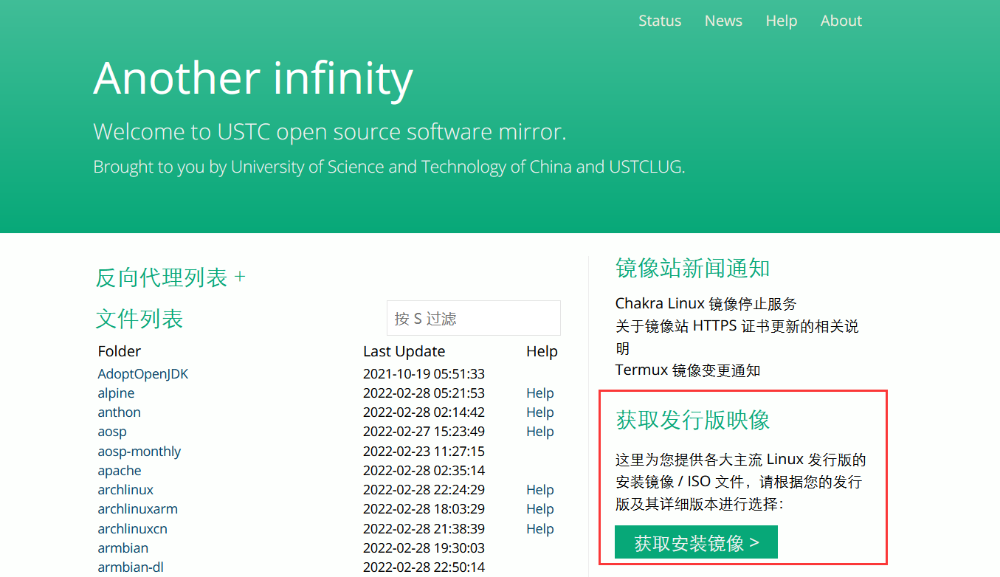
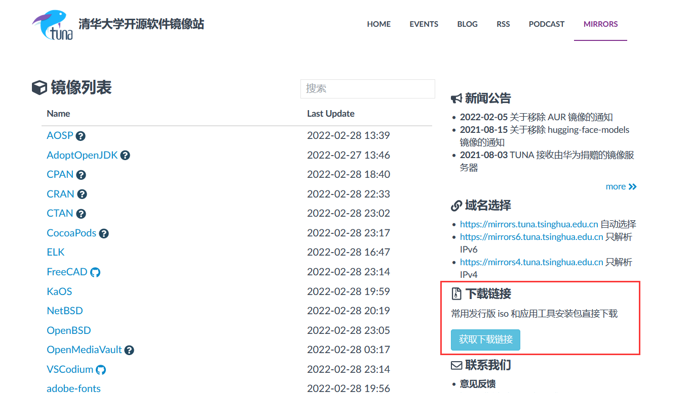
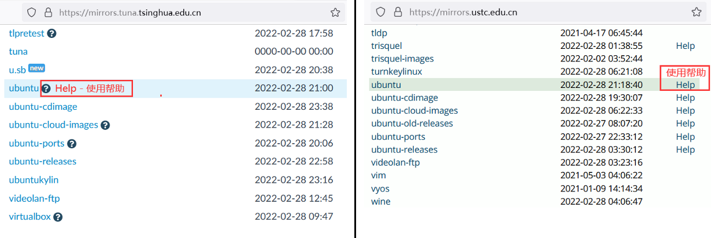
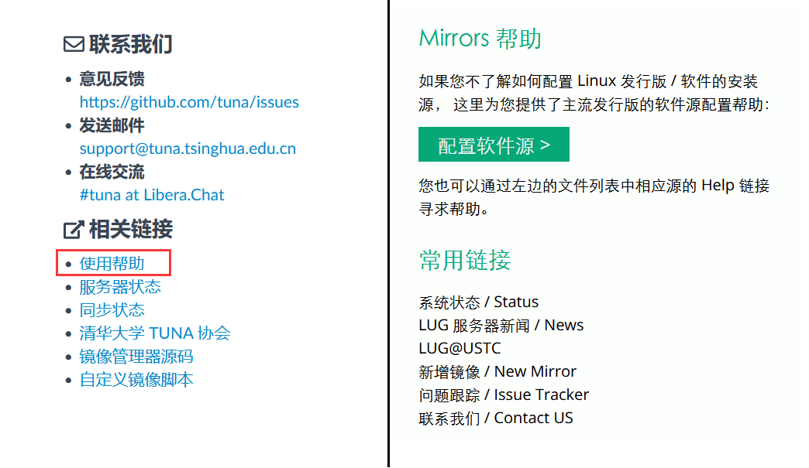

开源镜像站
首先说一下为什么要用镜像站，因为一些开源软件的发布网站或者是一些软件包管理器默认的下载服务器是在国外的，访问、下载时速度比较慢。国内的有些公司或者高校把这些内容定时备份过来，建立了一个“镜像站”来方便国内的人使用。
开源镜像站合集
校园网联合镜像站（推荐使用）
2022.05 发现一个MirrorZ的项目，可以聚合搜索各大高校的镜像站，现已被中国教育网“收编”。
2023.07 教育网的版本直接进首页会被302到帮助（而且首页没有帮助的链接），提了个 issue
2023.08 已解决
企业
其他高校
如何使用
这个是之前写的，现在有了校园网联合镜像站要方便不少，但是具体方法大差不差。
1、系统镜像下载
现在开源镜像站基本都会提供镜像下载的快捷通道，这里以中科大镜像站和清华镜像站为例  
2、“换源” - 更换软件源
这里是以Ubuntu软件源为例，其他pacman、yum等甚至pip之类都类似，当然像Ubuntu桌面版那样有图形界面的设置的可以直接在设置里更改。 具体“换源”方法大部分镜像站都有使用帮助，就在名称旁边。 
可直接选择右侧的“帮助”，可以查看所有的帮助。 